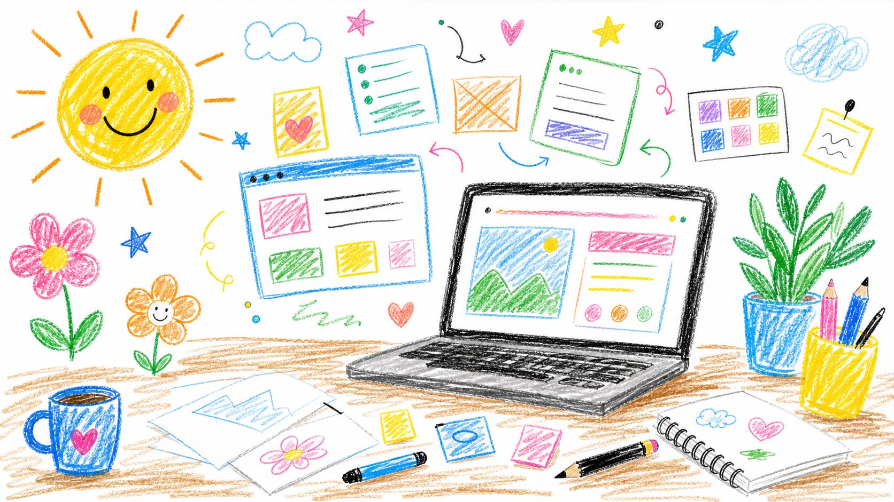

종이에 쓱쓱 그린 듯한 친근한 첫인상
Crayon Designer
삐뚤빼뚤해도 귀엽게, 웹을 그립니다.
크레파스 선처럼 자유롭고, 스티커처럼 눈에 남는 웹페이지를 만듭니다. 반듯하지 않아도 기억에 남는 화면을 좋아합니다.

삐뚤지만 읽기 쉬운 카드와 버튼 구성
문구는 관리자 패널에서 바로 수정 가능
Little Works
작고 귀여운 화면 실험
낙서 같은 랜딩 페이지
손으로 그린 듯한 질감과 선으로 첫 화면을 만듭니다.
색종이 같은 컴포넌트
버튼, 카드, 배지를 장난감처럼 만지고 싶은 형태로 정리합니다.
쉬운 관리자 편집
복잡한 도구 없이 문구를 바로 바꿀 수 있는 흐름을 유지합니다.
About
어린이 그림처럼 솔직한 웹을 좋아합니다.
반듯한 템플릿보다 기억나는 모양, 완벽한 선보다 개성 있는 화면을 추구합니다. GitHub, Vercel, Supabase로 배포와 편집 흐름은 그대로 두고 겉모습은 훨씬 더 장난스럽게 만들었습니다.